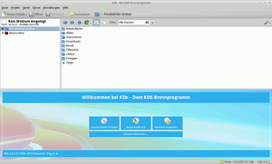
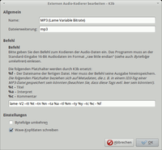
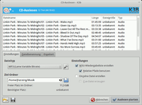
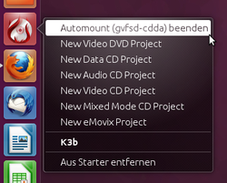

K3b
Dieser Artikel wurde für die folgenden Ubuntu-Versionen getestet:
Ubuntu 17.10 Artful Aardvark
Ubuntu 16.04 Xenial Xerus
Ubuntu 14.04 Trusty Tahr
Zum Verständnis dieses Artikels sind folgende Seiten hilfreich:
K3b  ist ein Programm zum Brennen und Auslesen von CDs, DVDs und Blu-ray-Disks, ursprünglich für die Desktop-Umgebung KDE. Das Ziel ist es, möglichst viele Funktionen möglichst intuitiv erledigen zu können. Der Name K3b ist die kurze Schreibweise für KBBB, was für „KDE Burn Baby, Burn!“ steht. Es ist ein sehr funktionsreiches Brennprogramm für Linux und wird auch von vielen Anwendern anderer Umgebungen verwendet. Die Entwicklung begann 1999 und wurde lange Zeit nur mit niedrigen Versionsnummern versehen. Erst im März 2007 erschien Version 1.0. Ab Ubuntu 15.04 ist die aktuellste Version 2.0.3.
ist ein Programm zum Brennen und Auslesen von CDs, DVDs und Blu-ray-Disks, ursprünglich für die Desktop-Umgebung KDE. Das Ziel ist es, möglichst viele Funktionen möglichst intuitiv erledigen zu können. Der Name K3b ist die kurze Schreibweise für KBBB, was für „KDE Burn Baby, Burn!“ steht. Es ist ein sehr funktionsreiches Brennprogramm für Linux und wird auch von vielen Anwendern anderer Umgebungen verwendet. Die Entwicklung begann 1999 und wurde lange Zeit nur mit niedrigen Versionsnummern versehen. Erst im März 2007 erschien Version 1.0. Ab Ubuntu 15.04 ist die aktuellste Version 2.0.3.
Installation¶
In Kubuntu ist K3b das Standardbrennprogramm und im Startmenü unter "Multimedia -> K3b" zu finden. Bei einer Minimalinstallation oder anderen Desktop-Umgebungen muss das folgende Paket installiert [1] werden:
k3b
 mit apturl
mit apturl
Paketliste zum Kopieren:
sudo apt-get install k3b
sudo aptitude install k3b
Falls man KDE nicht nutzt, wird zusätzlich das deutsche Sprachpaket für KDE benötigt:
|  |
| K3b |
language-pack-kde-de
mit apturl
Paketliste zum Kopieren:
sudo apt-get install language-pack-kde-de
sudo aptitude install language-pack-kde-de
Ist dies nicht ausreichend, kann man die noch fehlenden Pakete automatisch unter "System -> Systemverwaltung -> Sprachunterstützung" ergänzen lassen.
Seit Ubuntu 13.04 kann man auch gezielt ausschließlich die Sprachunterstützung für k3b installieren.
k3b-i18n
mit apturl
Paketliste zum Kopieren:
sudo apt-get install k3b-i18n
sudo aptitude install k3b-i18n
Nach der Installation der Pakete findet man K3b im Anwendungsmenü unter "Multimedia -> K3b" (Ubuntu bzw. Xubuntu).
Extras¶
Um Audio-CDs aus MP3-Dateien erstellen zu können, muss folgendes Paket installiert werden [1]:
libk3b6-extracodecs (universe)
mit apturl
Paketliste zum Kopieren:
sudo apt-get install libk3b6-extracodecs
sudo aptitude install libk3b6-extracodecs
Damit alle Stücke auf der Audio-CD die gleiche Lautstärke erhalten, empfiehlt sich das Paket
normalize-audio (universe)
mit apturl
Paketliste zum Kopieren:
sudo apt-get install normalize-audio
sudo aptitude install normalize-audio
Es kann allerdings Probleme beim Auffinden geben.
Anwendung¶
Nach dem Start von K3b erscheint in der unteren Hälfte ein Auswahlmenü. Zur Wahl stehen neben dem Erstellen von Audio-/Daten-CD/DVD auch das Kopieren von CDs/DVDs. Unter "Weitere Aktionen..." lassen sich Optionen wie das Brennen eines ISO-Abbildes auf einen Datenträger, das Auslesen von Audio-CDs oder das Löschen einer CD-RW auswählen. Durch einen Rechtsklick auf einer freien Fläche im Aktionsmenü können zudem Knöpfe hinzugefügt werden. Wenn man sich für eine Option entschieden hat, so erscheint in der unteren Hälfte von K3b meist ein neues Tab, in dem angezeigt wird, welche Daten bereits auf die CD/DVD gebrannt werden sollen und wie viel Platz auf dem Datenträger noch vorhanden ist. Über das Feld "Datenträger-Name" kann man der neuen CD/DVD einen individuellen Namen geben. Das Hinzufügen von Dateien und Ordnern zum Brennprojekt geschieht durch Drag & Drop.
Die MD5-Summe prüfen mit K3b¶
K3b bietet die Möglichkeit die MD5-Prüfsumme eines ISO-Abbilds vor dem Brennen auf CD/DVD zu überprüfen. Im Dialog, welcher durch die Schaltfläche "ISO-Abbild auf DVD brennen..." (bzw. CD) geöffnet wird, wird die Prüfsumme sofort nach Auswahl des Abbilds berechnet und nach Abschluss der Berechnung angezeigt. Durch  kann man die Prüfsumme entweder in die Zwischenablage kopieren oder über "Prüfsumme vergleichen" automatisch überprüfen lassen.
kann man die Prüfsumme entweder in die Zwischenablage kopieren oder über "Prüfsumme vergleichen" automatisch überprüfen lassen.
Audio-CDs auslesen¶
|  |
| MP3-Einstellungen |
|  |
| Audio-CD auslesen |
Um eine Audio-CD auszulesen, muss sie in K|X|Ubuntu einfach eingelegt werden. Kurze Zeit später erscheint ein Dialog, in dem man "Digital-Audio mit K3b auslesen" auswählt. Ansonsten kann es im Hauptmenü unter "Audio-CD auslesen" getan werden. K3b sucht automatisch nach möglichem Interpreten und Album im Internet und öffnet einen Dialog mit den Treffern. Bei CD-Text wird man zunächst gefragt, ob man diesen oder die Treffer aus der Internetdatenbank verwenden möchte. Die Suche kann jederzeit wiederholt werden, indem man auf den entsprechende Button oberhalb der Songliste klickt.
Mit einen lmt-Klick auf "Auslesen starten" öffnet sich ein Dialog, in dem festgelegt werden kann, welcher Dateityp verwendet werden soll, in welchen Ordner die fertigen Dateien landen und nach welchem Schema sie benannt werden sollen. Möchte man die CD im MP3-Format rippen, wird zusätzlich das folgende Paket benötigt [1]:
lame (multiverse)
mit apturl
Paketliste zum Kopieren:
sudo apt-get install lame
sudo aptitude install lame
Hinweis:
Standardmäßig ist bei LAME eine Bitrate von 128 KBit/s eingestellt. Möchte man andere MP3-Einstellungen verwenden, sei einem die u.g. Projektseite ans Herz gelegt.
Änderungen an den Einstellungen nimmt man durch Klicken auf das Werkzeugsymbol (früher Zahnradsymbol) neben dem Dateityp vor. Dort kann man auch ein neues Profil zum Kodierer anlegen.
Konfiguration¶
Unter "Einstellungen -> K3b einrichten..." stehen die Optionen von K3b zu Verfügung:
| Einstellungen K3b | |
| Menüpunkt | Beschreibung |
| "Verschiedenes" | Eine Zusammenstellungen unterschiedlicher Optionen, wie die Auswahl des temporären Ordners oder das (De-)Aktivieren eines Fortschritts-OSDs |
| "Geräte" | Hier werden die Laufwerke aufgelistet, auf die K3b zum Brennen zurückgreift. Zusätzlich können hier Laufwerke manuell hinzugefügt werden, falls sie nicht automatisch erkannt wurden. |
| "Programme" | Hier werden die Programme aufgelistet, auf die K3b beim Brennvorgang zugreift. |
| "CDDB" | CDDB (CD-Database) ist die Internetdatenbank, die K3b benutzt, um mögliche Titel der eingelegten Audio-CD herauszufinden. Hier kann unter anderem der Server gewechselt werden, auf dem diese Abfrage stattfinden soll. |
| "Benachrichtigungen" | Hier können die Klänge, die K3b ausgibt wenn beispielsweise eine Daten-CD fertig gebrannt wurde, konfiguriert oder deaktiviert werden. |
| "Module" | Hier können die Codecs eingerichtet werden, die K3b beispielsweise für das Dekodieren von MP3-Dateien benutzt. |
| "Stile" | Ein Theme-Manager, über den das Aussehen von K3b verändert werden kann. |
| "Erweitert" | Hier können spezielle Einstellungen für den Brennvorgang vorgenommen werden, beispielsweise, dass das Laufwerk nach Abschluss des Brennvorgangs nicht ausgeworfen werden soll. |
Problembehebung¶
cdrecord vs. wodim¶
Ubuntu nutzt als Standard wodim, eine funktional eingeschränkte und nicht mehr weiterentwickelte Abspaltung (Fork) von cdrecord. Möchte man beispielsweise Blu-Rays brennen, reicht wodim nicht aus. Dann wird empfohlen, das "echte" cdrecord zu installieren.
Brennen nur als Root möglich¶
Zum Brennen sind Root-Rechte notwendig. Soll Brennen auch Benutzer ohne Root-Rechte möglich sein, muss eine "Brenngruppe" definiert und die Benutzer, die brennen dürfen, dieser Gruppe (z.B. burning) zugeordnet werden [3]. Anschließend muss K3b mitgeteilt werden, dass es die neu erstellte Gruppe verwenden soll. Dies geschieht über "Einstellungen -> System-Berechtigungen einrichten...". Dort wählt man die entsprechende Gruppe sowie die Geräte und Programme, die mit dieser Gruppe verwendet werden sollen.
Beim Brennen Fehlermeldung "Permission Denied"¶
Wenn man bei dem Versuch zu brennen – egal ob mit Root-Rechten oder nicht – immer die Fehlermeldung "Permission Denied" (Zugriff verweigert) angezeigt bekommt, hat man zwei Möglichkeiten, das Problem zu umgehen:
Man wählt in K3b "Einstellungen -> K3b einrichten -> Erweitert -> Manuelle Auswahl des Brennprogramms" aus und wählt dann vor dem Brennen im Fenster als Brennprogramm cdrdao aus.
Um auch mit dem voreingestellten "cdrecord" brennen zu können, muss man mit
EDITOR=nano sudo -E visudo
die Datei sudoers bearbeiten [2] , indem man folgende Zeile hinzufügt:
%cdrecording ALL=NOPASSWD: /usr/bin/wodim
und mit F3 abspeichert (hat man cdrecord nachinstalliert, ist
wodimdurchcdrecordzu ersetzen). Anschließend muss man noch die Benutzer, die mit K3b brennen sollen, der Gruppecdrecordinghinzufügen [3].
VCDXbuild, VCDXminfo und/oder VCDXrip nicht gefunden¶
vcdxbuild, vcdxminfo und vcdxrip befinden sich nicht direkt in den Paketquellen! Dafür wird das Paket VCDImager benötigt. VCDImager ist eine Programmsammlung zum Authoring und Erstellung von (Super-) Video-CDs (VCD und SVCD). VCDImager besteht aus den Kommandozeilen-Programmen vcdimager, vcdxgen, vcdxbuild, vcdxrip und vcdrip.
vcdimager (universe)
mit apturl
Paketliste zum Kopieren:
sudo apt-get install vcdimager
sudo aptitude install vcdimager
CDDB-Einstellungen sind deaktiviert¶
Wenn unter "Einstellungen > k3b einrichten... > CDDB" keine Einstellungen möglich sind, muss man das Paket kde-config-cddb nachinstallieren:
kde-config-cddb
mit apturl
Paketliste zum Kopieren:
sudo apt-get install kde-config-cddb
sudo aptitude install kde-config-cddb
Rippen schlägt fehl¶
Sollte das Rippen mit LAME fehlschlagen (Fehlermeldung oder nur Rauschen in der MP3-Datei), so muss man im Dialog "CD-Auslesen" auf das Werkzeug bzw. (in älteren Versionen) blaue Zahnrad rechts neben dem Dateityp "Mp3 (Lame)" klicken und in den nachfolgenden Moduloptionen folgende Einstellungen vornehmen:
"Bytefolge umkehren": Häkchen entfernen,
"Wave-Kopfdaten schreiben": Häkchen setzen.
Siehe auch: 267399.
normalize-audio wird nicht gefunden¶
K3b kann zur Normalisierung von Audiodateien auf normalize-audio aus dem gleichnamigem Paket zurückgreifen; allerdings wird das Programm unter Ubuntu zunächst nicht erkannt und kann dementsprechend nicht verwendet werden. Über einen Umweg kann s trotzdem verwendet werden. Dazu muss zunächst die Datei normalize-audio in /usr/bin in normalize umbenannt werden, z.B. mit dem Befehl [4]
sudo mv /usr/bin/normalize-audio /usr/bin/normalize
Außerdem muss danach in einem Editor mit Root-Rechten [5] ein Skript unter dem Namen normalize-audio mit folgendem Inhalt in /usr/bin angelegt und ausführbar gemacht [6] werden:
1 2 3 4 5 6 7 8 9 | #!/bin/bash case "$1" in --version) normalize --version | sed -e 's/normalize /normalize-audio /g' ;; *) normalize $* ;; esac |
Anschließend sollte K3b das Programm in der installierten Version erkennen und verwenden können (dazu "Einstellungen -> K3b einrichten -> Programme" aufrufen, dort die Schaltfläche "Suchen" betätigen). K3b erwartet das Programm anscheinend unter dem Namen "normalize", das Umbenennen führt zum Erkennen, das Skript übergibt den Namen und die Version dann wieder als "normalize-audio" (siehe auch diesen Forumsthread).
"gvfsd-cdda Beenden"- Dialog vor dem Auslesen einer Audio-CD unter GNOME¶
Nach dem Einlegen einer Audio-CD wird diese in der Regel automatisch per Automount eingebunden. Um beim Auslesen vollen Zugriff auf eine CD zu erhalten, bittet K3b den Benutzer gvfs-cdda zu beenden. Wen dies stört, kann das Automount-Verhalten (im Terminal per gsettings) dauerhaft abändern.

Eine andere einfache Möglichkeit ist, für K3b einen benutzerdefinierten Kontextmenü-Eintrag zum Beenden von gvfsd-cdda zu erstellen. In einem Editor[5] mit Root-Rechten öffnet man die .desktop-Datei /usr/share/applications/kde4/k3b.desktop von K3b. Die Definition Actions muss man um den eigenen Eintrag erweitern (z.B. noautomount). Die modifizierte Passage in der k3b.desktop kann dann z.B. so aussehen:
Actions=noautomount;VideoDVD;DataCD;AudioCD;VideoCD;MixedCD;eMovix; [Desktop Action noautomount] Name=Automount (gvfsd-cdda) beenden Exec=pkill gvfsd-cdda
Per kann dann im Kontextmenü des K3b-Starters gvfsd-cdda vor dem Auslesen beendet werden (siehe Bild rechts).
Eine weitere temporärer Ungehung des Problems ist es, vor dem Start von K3B ein Terminalfenster zu öffnen und dort einzugeben:
watch -n 1 pkill gvfsd-cdda
Da dadurch danach im Sekundenabstand der gvfsd-cdda beendet wird, können die auftretenden Fehlermeldungen vom protestierenden Gnome bei einlegen einer CD mit "OK" ignoriert werden.
Links¶
k3b.org - Projektseite
K3b-Workshop Teil 1 - Artikel aus LinuxUser 05/06

K3b-Workshop Teil 2 - Artikel aus LinuxUser 06/06
Verwendung von LAME - Projektseite von LAME
Brennprogramme
 Übersichtsartikel
Übersichtsartikel
- Erstellt mit Inyoka
-
 2004 – 2017 ubuntuusers.de • Einige Rechte vorbehalten
2004 – 2017 ubuntuusers.de • Einige Rechte vorbehalten
Lizenz • Kontakt • Datenschutz • Impressum • Serverstatus -
Serverhousing gespendet von